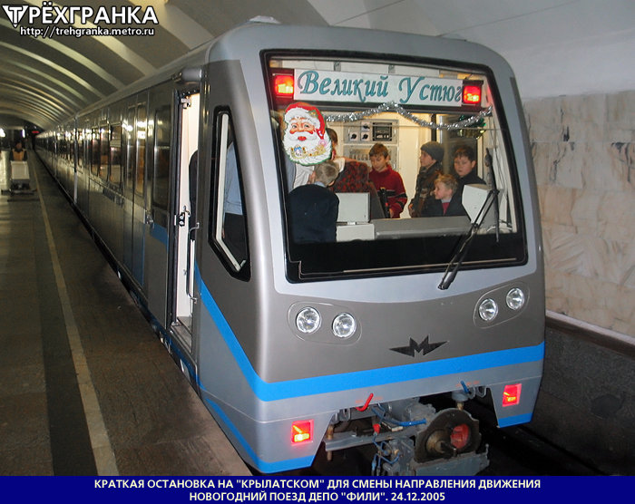
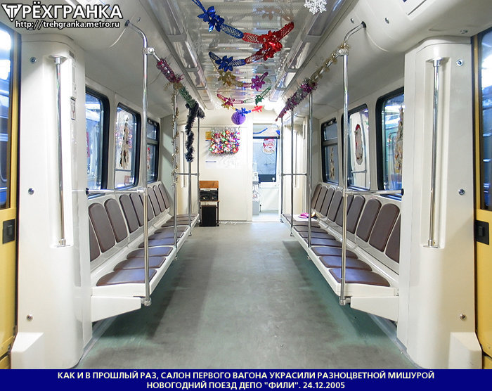

🎄 Новогодний Русич 2005 🎅
В 2005 году в ТЧ-9 «Фили» работники сделали новогодний состав на базе «Русича». Это был второй новогодний поезд Московского метрополитена.
На составе была организована VIP-поездка для работников депо и их детей. Состав по сравнению с НГ Русичем 202* был украшен хуже, но в то время это был отличный новогодний поезд.
Общая информация
| Параметр | Значение |
|---|---|
| Год создания | 2005 |
| Депо | ТЧ-9 «Фили» |
| Модель | Русич (Скиф) |
| Статус | Второй новогодний поезд Мосметро |
| Особенность | Табличка «Великий Устюг» вместо маршрутоуказателя |
История появления
В 2005 году в ТЧ-9 «Фили» работники сделали новогодний состав на базе «Русича». На окнах были наклейки, посвящённые Новому году, в салоне повесили гирлянды. Вместо маршрутоуказателя повесили табличку «Великий Устюг».
Создание состава
В ТЧ-9 «Фили» работники сделали новогодний состав на базе «Русича».
VIP-поездка
На составе была организована VIP-поездка для работников депо и их детей.
Выход с пассажирами
Состав после поездки с работниками зашёл в депо, после чего вышел с пассажирами.
Важно: Этот состав стал вторым новогодним поездом Московского метрополитена, продолжив традицию, начатую в 2004 году.
Особенности оформления
🪟 Окна
На окнах были наклейки, посвящённые Новому году.
🎄 Салон
В салоне повесили гирлянды.
📋 Маршрутоуказатель
Вместо маршрутоуказателя повесили табличку «Великий Устюг».
🏆 Второй в истории
Стал вторым новогодним поездом Московского метрополитена.
Фотогалерея


Нажмите на фото для увеличения. Источник: «Трехгранка»
«Новогодний Русич 2005 — это второй новогодний поезд Московского метрополитена. Он продолжил традицию, начатую годом ранее, и подарил праздник работникам депо и пассажирам».